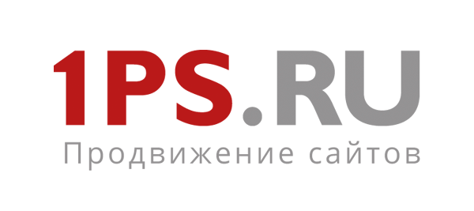
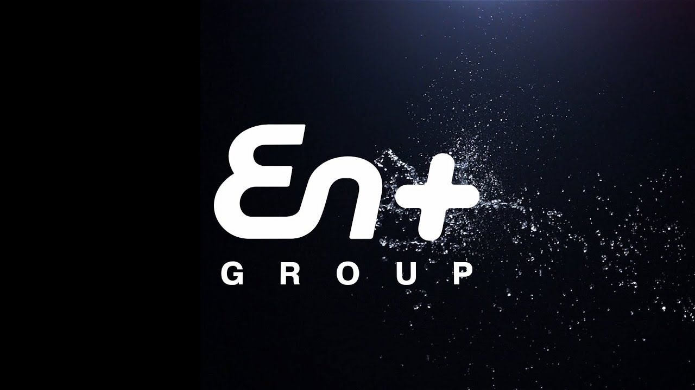

Вы будете изучать
Принципы организации и функционирования ЭВМ, возможные области их применения; методы и средства программирования, системы управления базами данных, интегрированные среды, возможности и особенности их применения при разработке автоматизированных систем; принципы, методы и средства системного анализа и принятия решений; методы и средства защиты компьютерной информации; современные методы и средства разработки автоматизированных систем обработки информации и управления; управление проектами; программные средства мультимедиа технологий; средства спецификации функциональных задач и проектных решений; модели и структуры информационных сетей, оценки их эффективности, сетевые технологии.
Вы научитесь
Применять математические методы для решения задач управления; проектировать системы управления; проектировать и создавать базы данных, базы знаний и приложения для работы с ними; использовать современные сетевые технологии; использовать методы и средства обеспечения информационной безопасности компьютерных сетей; разрабатывать автоматизированные системы обработки информации управления; исследовать, моделировать и проектировать распределенные, корпоративные информационно-управляющие системы; оценивать качество программного обеспечения автоматизированных систем и их надежность.
Изучая и анализируя ситуацию, сложившуюся в подразделениях предприятия или фирмы, Вы сможете всегда предложить решения, которые существенно улучшат работу. Вы овладеете системным подходом и системным мышлением, освоите математические методы и новейшие информационные технологии, высокоуровневые языки программирования и современные инструментальные средства, научитесь применять их на практике для решения разнообразных задач.
Кем работать
- Разработчик ПO
- Web-разработчик
- 1С-разработчик
- Web-аналитик
- UX-специалист
- Системный аналитик
- Data Engineer
- Data Scientist
- QA-специалист
- Менеджер ИТ-проектов
- Desktop-разработчик
- DevOps
- Android/iOS-разработчик
- VR-разработчик
Партнеры

1PS.ru
Продвигаем бизнес с использованием AI.
КРОК
Экспертиза в области ИТ-инфраструктуры.

En+
Программа модернизации «Новая энергия».